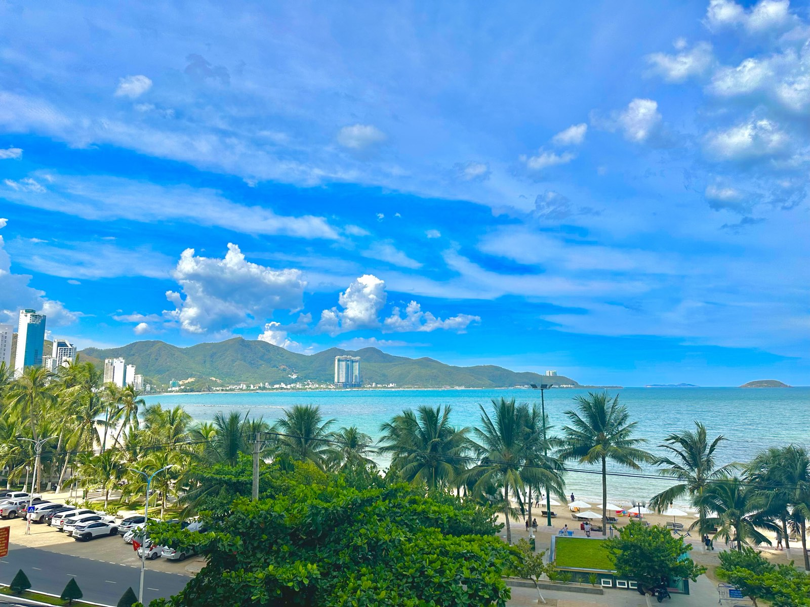

Điểm tin BĐS Khánh Hoà tuần 09–15/11: lịch đấu giá 16 khu đất, hồ sơ cấp sổ lần đầu còn tồn, ba luật nhà đất vẫn chờ biểu quyết
Tuần này ít tin "nóng" kiểu giá lên giá xuống, nhưng nhiều tin về thời gian: khi nào khu đất được đấu giá, khi nào hồ sơ được cấp sổ, khi nào con đường xong. Ở Quốc hội, ba luật nhà đất vẫn là DỰ THẢO — kỳ họp còn đến 20/11. Tôi gom lại các tin đáng để ý, mỗi tin kèm một dòng "chạm vào ai".

Tuần của những mốc thời gian: đấu giá, cấp sổ, thông xe.
1. Khánh Hoà ấn định tiến độ đấu giá 16 khu đất
Theo Kế hoạch 8690 ngày 9/7/2026, năm nay tỉnh có 16 khu, thửa đất đưa ra đấu giá — 11 khu thực hiện dự án và 5 khu giao đất ở. Thông báo kết luận số 895 ngày 2/11 nhận định việc thực hiện kế hoạch "chưa đạt yêu cầu", nguyên nhân chủ quan là chủ yếu, và ấn định lại mốc cho từng khu (nguồn: Báo Khánh Hoà 9/11). Một số mốc đáng ghi:
- Kho cảng Bình Tân, 1A Phước Long (phường Nha Trang): chưa có quy hoạch 1/500; phê duyệt quy hoạch trước 30/11, dự kiến đấu giá tháng 1/2027.
- Làng biển Nha Trang: đã có quy hoạch 1/500; phường Nam Nha Trang phối hợp bàn giao khoảng 20.166 m², đấu giá chậm nhất quý I/2027.
- Thửa số 2–4 Bãi Dương (phường Bắc Nha Trang), giao đất ở: dự kiến tháng 12/2026, phương án chưa được duyệt.
- 42 lô giáp đường Phan Bội Châu, khu dân cư Mỹ Bình 1 (phường Đông Hải): dự kiến quý I/2027.
- Một số khu còn vướng: Hồ Na (xã Đại Lãnh) liên quan một vụ án hành chính; lô 9 khu F khu dân cư Bắc Vĩnh Hải còn vướng thông tin quy hoạch.
Chạm vào ai: người định đi đấu giá đất. Đây là mốc từ kết luận cuộc họp đăng trên báo — mốc chính thức phải xem ở thông báo đấu giá của đơn vị tổ chức. Và nếu dự thảo Luật Đấu giá sửa đổi (đặt trước 20–50% giá khởi điểm) được thông qua trước các phiên quý I/2027, tiền đặt trước có thể khác hiện nay — điều tôi sẽ theo dõi.
2. Cấp sổ đỏ lần đầu ở cấp xã: nhiều nơi còn tồn hồ sơ
Từ 1/7/2025, việc cấp giấy chứng nhận lần đầu chuyển về cấp xã. Số liệu từ 1/7/2025 đến 30/9/2026 (hồ sơ nhận / đã giải quyết): phường Nha Trang 629 / 125 (khoảng 20%), Cam An 471 / 109 (khoảng 23%), Tây Ninh Hoà 1.038 / 388, Phước Hữu 1.060 / 986. Nguyên nhân được nêu: nguồn gốc đất phức tạp, bản đồ đo đạc từ 1995–1996 hoặc 2015 sai lệch ranh và diện tích, chuyển nhượng giấy tay nhiều đời, nhân sự mỏng (nguồn: Báo Khánh Hoà 10/11).
Cùng mạch đó, phường Nam Nha Trang lập tổ xác minh nguồn gốc đất từ 24/7/2026: sau hơn 3 tháng, tổ đã xét 589 thửa thuộc 5 dự án trọng điểm, thông qua 443 thửa (hơn 75%); tốc độ bình quân tăng từ khoảng 33 lên gần 116 thửa/tháng (nguồn: Báo Khánh Hoà, 11–12/11).
Chạm vào ai: người mua lô đất chưa có sổ. Thời gian cấp sổ lần đầu là một rủi ro tiến độ thật — nên được tính vào hợp đồng đặt cọc: hạn bao lâu, quá hạn thì xử lý thế nào.
3. Tỉnh lộ 1A (Ninh Hoà): một con đường, hai con số lộ giới
Dự án nâng cấp Tỉnh lộ 1A dài 6,1 km, nối Quốc lộ 1 với vòng xoay Ninh Diêm, 6 làn xe, tổng mức đầu tư khoảng 559,4 tỷ đồng. Chủ trương đầu tư lập theo Quy hoạch tỉnh với lộ giới 42 m; nhưng quy hoạch chung Khu kinh tế Vân Phong và quy hoạch phân khu Bắc Hòn Hèo, ở đoạn giáp KCN Ninh Diêm 1 và Ninh Thọ, lại ghi lộ giới 60 m — chênh 18 m, trung bình 9 m mỗi bên, chưa nằm trong phạm vi thu hồi. Cuộc họp chiều 12/11 giao các sở rà soát dự toán, hoàn thiện hồ sơ điều chỉnh chủ trương trình HĐND tỉnh (nguồn: Báo Khánh Hoà 12/11). Chưa có quyết định điều chỉnh.
Chạm vào ai: người xem đất ven tuyến này. Bài học chung: tra lộ giới phải đến tầng quy hoạch chi tiết nhất đang áp cho lô đất, không dừng ở quy hoạch tỉnh — đây là bước tôi luôn làm trong quy trình kiểm tra quy hoạch.
4. Lãi vay mua nhà: dải ưu đãi phổ biến 8,5–11,5%
Hai nguồn trong tuần cho hai dải hơi khác nhau. Khảo sát báo chí đầu tháng 11: một số ngân hàng lớn giới thiệu gói vay mua nhà cố định 12 tháng quanh 9–10%/năm (nguồn: CafeF 9/11, theo Hà Nội Mới). Tại diễn đàn ngày 11/11, Chủ tịch VARS nêu lãi ưu đãi 8,5–11%/năm, sau đó thả nổi 13–15%/năm; trước đó số liệu DXS-FERI tháng 9 là 9,8–11,5% ưu đãi, 13–16% thả nổi (nguồn: VnExpress 12/11; CafeF 9/11). Chỗ vênh nhiều khả năng do khác thời điểm và khác mẫu khảo sát. Cũng theo VARS, 9 tháng 2026 cả nước có khoảng 55.000 giao dịch, quý III khoảng 12.520, tỷ lệ hấp thụ trên 39%.
Chạm vào ai: người tính vay mua nhà. Con số cần đưa vào bảng tính không phải lãi ưu đãi năm đầu, mà là lãi sau ưu đãi — dải 13–16% là mức nên dùng để thử khả năng trả nợ.
5. Ba luật nhà đất: vẫn chưa biểu quyết
Đến sáng 15/11, tôi chưa tìm thấy nguồn báo nào đưa tin Quốc hội đã biểu quyết Luật Đất đai, Luật Nhà ở và Luật Kinh doanh bất động sản sửa đổi; kỳ họp dự kiến kéo dài đến 20/11. Diễn biến mới trong tuần là ở dự thảo Luật Nhà ở: người mua nhà ở xã hội chỉ được bán lại cho người đủ điều kiện mua nhà ở xã hội, với giá tối đa bằng giá gốc trong hợp đồng. HoREA kiến nghị giữ quy định của Luật Nhà ở 2023 — sau 5 năm được bán theo cơ chế thị trường — và dẫn phản ánh một số khách đã rút hồ sơ đăng ký mua (nguồn: VnExpress 10/11).
Chạm vào ai: người mua nhà ở xã hội với kỳ vọng bán lại. Đây là DỰ THẢO và ý kiến kiến nghị, chưa phải luật — nên chờ văn bản chính thức rồi mới tính lại kế hoạch.
6. Khách Hàn Quốc đến Khánh Hoà giảm hơn 6%
10 tháng 2026, Khánh Hoà đón hơn 1,8 triệu lượt khách Hàn Quốc — vẫn chiếm hơn một nửa lượng khách Hàn đến Việt Nam — nhưng giảm hơn 6%; hiện còn khoảng 14–16 chuyến bay/ngày từ Hàn Quốc đến Cam Ranh, ít hơn khoảng 7 chuyến so với đầu năm. Doanh nghiệp lữ hành nêu các lý do: giá dịch vụ không còn rẻ, cạnh tranh từ Phú Quốc, Nhật Bản, Trung Quốc. Tỉnh đang nghiên cứu khôi phục đường bay Cam Ranh – Jeju, và có kế hoạch giải golf, roadshow tại Hàn Quốc năm 2027 (nguồn: Báo Khánh Hoà 11/11).
Chạm vào ai: người đang hoặc định đầu tư căn hộ, khách sạn cho thuê ngắn hạn. Mùa cao điểm tháng 12 – tháng 1 năm nay là dữ liệu đáng xem trước khi tính dòng tiền cho thuê — tính trên công suất thực, không phải con số quảng cáo.
7. Hạ tầng và tiền ngân sách: những mốc cần ghi lịch
- Cao tốc Khánh Hoà – Buôn Ma Thuột, dự án thành phần 1 (31,5 km): giải ngân 93,21%, cam kết xong toàn bộ trước 31/12/2026 (nguồn: Báo Khánh Hoà 8/11). Thời gian Nha Trang – Buôn Ma Thuột "hơn 2 giờ" là khi cả tuyến xong — bài chưa nêu tiến độ hai dự án thành phần còn lại.
- Bồi thường, tái định cư cho đường sắt tốc độ cao (dự án thành phần do tỉnh làm chủ đầu tư): giải ngân 30,76%, yêu cầu bàn giao mặt bằng trước 15/12/2026 (nguồn: Báo Khánh Hoà 11/11).
- Giải ngân đầu tư công: toàn tỉnh 10 tháng đạt 78,9%; nhóm dự án trọng điểm đến 31/10 đạt 66,7%; mục tiêu 90% trước 30/11. Tổng kết 90 ngày cao điểm giải phóng mặt bằng: 25/40 dự án đạt hoặc gần đạt, 15 dự án thấp (nguồn: Báo Khánh Hoà 13/11).
- Ninh Phước được công nhận đô thị loại III (Quyết định 3775 ngày 27/10/2026, công bố chiều 9/11), sau Cam Lâm ngày 6/11. Việc lập phường cho hai xã vẫn chờ quyết định ở cấp trên (nguồn: Báo Khánh Hoà 9/11).
- Dự toán ngân sách 2027 (Quốc hội đã thông qua): thu từ nhà, đất khoảng 775.280 tỷ đồng, cao hơn dự toán 2026 khoảng 40%; riêng tiền sử dụng đất hơn 666.850 tỷ (nguồn: VnExpress 9/11). Đây là bối cảnh; tôi không suy ra giá đất hay hệ số cụ thể nào từ con số này.
Điều tôi để ý nhất tuần này
Hai tin nhỏ ở Khánh Hoà — hồ sơ cấp sổ lần đầu còn tồn, và một con đường có hai con số lộ giới — nói cùng một điều: giấy tờ và quy hoạch là chỗ tốn thời gian nhất của một giao dịch, không phải chỗ thương lượng giá. Tuần tới kỳ họp Quốc hội kết thúc; nếu ba luật được biểu quyết, tôi sẽ đọc văn bản và cập nhật lại những gì đã viết ở các tuần trước.
Bản tin tổng hợp từ các bản tin thị trường ngày 10/11, 12/11 và 14/11/2026 tôi đã gửi khách qua Zalo, cộng một lượt tra cứu sáng 15/11. Đây là tin tổng hợp từ báo chí, không phải văn bản gốc; các dự thảo luật nêu trong bài chưa được Quốc hội thông qua, ý kiến kiến nghị và các mốc tiến độ trong kết luận cuộc họp có thể thay đổi. Bài không nhằm khuyến nghị mua, bán, vay hay tham gia đấu giá. Trước khi dùng bất kỳ con số nào để ra quyết định, anh/chị nên kiểm chứng lại tại nguồn chính thức.
"Rồi, ngày mới tốt lành nhé."
Sống tử tế · Kiếm tiền hạnh phúc · Cho đi giá trị
Muốn nhận bản tin thị trường qua Zalo?
Tôi đọc tin thị trường và gửi bản tóm tắt cho khách qua Zalo vào sáng thứ Ba, thứ Năm, thứ Bảy, kèm tổng hợp cuối tuần — có ghi nguồn và nói rõ chỗ nào số liệu đang vênh. Nhắn "BẢN TIN" để nhận miễn phí.
Nhắn Zalo — 0869 668 638